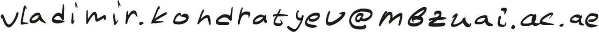

Vladimir Kondratyev

github
linkedin
google scholar
Hello! My name is Vladimir Kondratyev.
I currently pursue a PhD in statistical machine learning at MBZUAI, under the supervision of Maxim Panov and Eric Moulines.
Working on multidimensional conformal prediction and uncertainty quantification.
I'm based in France and always open to collaborations !
Publications
-
Volume Suboptimality of Optimal Transport,
Vladimir Kondratyev, Maxim Panov, Eric Mouilnes,
Under review at 2027 ICLR
-
Multidimensional UQ via Optimal Transport,
Nikita Kotelevskii, Vladimir Kondratyev, Maiya Goloburda, Alexander Fishkov, Mohsen Guizani, Eric Moulines, Maxim Panov,
2026 NeurIPS
-
Neural Optimal Transport Meets Multivariate Conformal Prediction,
Vladimir Kondratyev, Alexander Fishkov, Mahmoud Hegazy, Nikita Kotelevskii, Rémi Flamary, Maxim Panov, Eric Moulines
2026 ICLR
-
From Risk to Uncertainty: Generating Predictive Uncertainty Measures via Bayesian Estimation,
Nikita Kotelevskii, Vladimir Kondratyev, Martin Takáč, Eric Moulines, Maxim Panov
2025 ICLR
-
Weakly Supervised Multi-Output Regression,
Vladimir Kondratyev, Vladimir Berikov,
2023 Computer Data Analysis and Modeling: Stochastics and Data Science
-
Generative model based on junction tree variational autoencoder,
Vladimir Kondratyev, Marian Dryzhakov, Timur Gimadiev, Dmitriy Slutskiy,
2022 Journal of Cheminformatics
Inspired by this simple website.